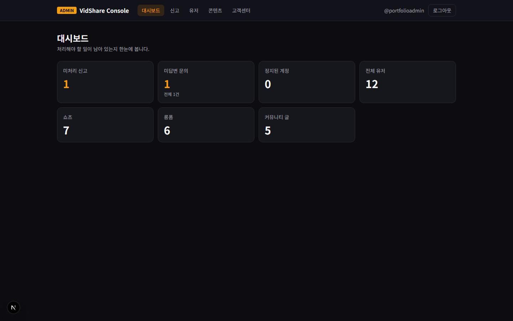
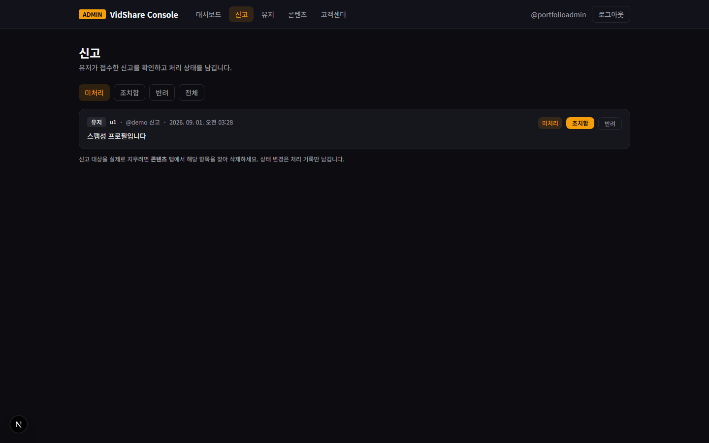
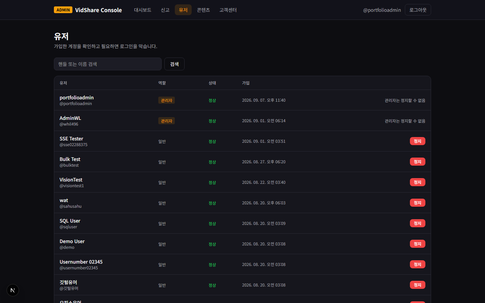
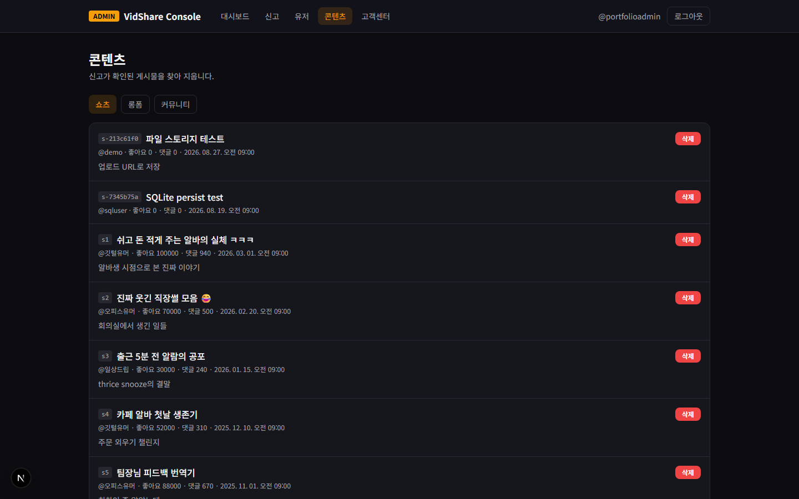
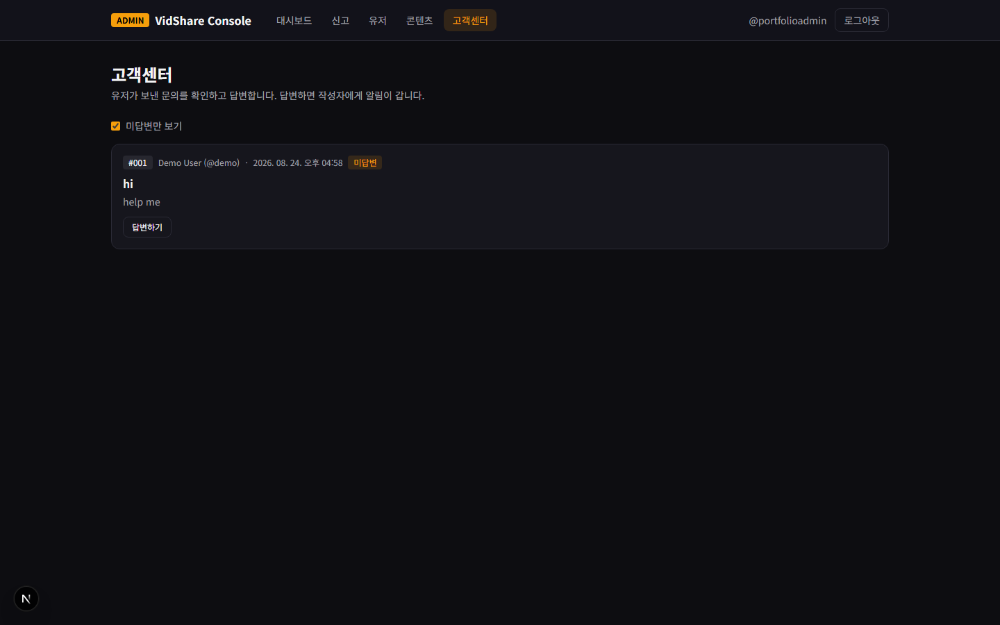
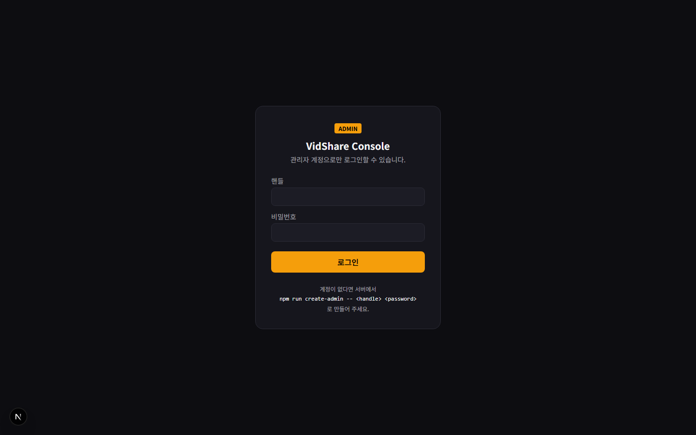

왜 별도 앱으로 만들었나
관리 기능을 사용자 앱 안에 if (user.role === "admin") 로 넣는 방법도 있었습니다.
그렇게 하지 않은 이유는 권한 경계를 진지하게 설계하게 만들기 위해서입니다.
같은 앱 안에 두면 관리자 화면과 사용자 화면이 같은 세션, 같은 번들, 같은 라우터를 공유합니다.
경계가 조건문 하나로 줄어듭니다.
vidshare_sid 와 vidshare_admin_sid 로 분리하고 나니
"운영자는 사용자 화면과 관리 화면을 동시에 열어 두고 확인한다"는 실제 작업 방식이 보였습니다.
쿠키가 하나였다면 한쪽에 로그인할 때마다 다른 쪽이 풀렸을 것입니다.
| 앱 | 포트 | 세션 쿠키 | 호출 대상 |
|---|---|---|---|
| FrontServer (사용자) | 3000 | vidshare_sid | /api/* |
| console (관리자) | 3200 | vidshare_admin_sid | /api/admin/* |
사용자 앱과 같은 스택, 다른 무게
스택은 사용자 앱과 동일합니다. 다만 의존성이 훨씬 가볍습니다 — TanStack Query도, 마크다운 렌더러도, PDF 파서도 없습니다. 관리 화면은 목록을 불러와 표로 뿌리고 조치 버튼을 누르는 것이 전부라 캐시 계층을 얹을 이유가 없었습니다.
| 기술 | 역할 | 비고 |
|---|---|---|
| Next.js 16 (App Router) | 라우팅 | 6개 라우트. 페이지 파일은 얇고 로직은 components/admin/ 에 |
| React 19 | UI | 세션 상태는 useSyncExternalStore |
| TypeScript | 타입 | types/index.ts 에 콘솔이 쓰는 최소 타입만 정의 |
| Tailwind CSS v4 | 스타일 | 사용자 앱과 같은 토큰 체계, 강조색만 앰버 |
| TanStack Query | — | 쓰지 않음. 목록 → 조치 → 재조회 패턴에 캐시 이득이 없음 |
types/index.ts 와 lib/api.ts 는 FrontServer와 일부 겹칩니다.
앱 세 개가 공유 패키지(모노레포 워크스페이스)를 둘 만한 규모가 아니라고 판단했습니다.
대신 globals.css 상단에 "팔레트를 바꾸면 두 파일을 함께 고쳐야 한다"는
주석을 남겼습니다. 추상화를 미루더라도 그 사실이 코드에 적혀 있어야 다음 사람이 놀라지 않습니다.
운영자가 하는 일 6가지
| 경로 | 하는 일 | 보호 |
|---|---|---|
/login | 관리자 로그인 | 유일하게 비로그인 접근 가능 |
/ | 대시보드 — 미처리 신고, 미답변 문의, 정지 계정, 전체 유저, 쇼츠·롱폼·커뮤니티 수 | AdminRouteGuard |
/reports | 신고 — 상태별 조회, 조치함/반려 처리 | AdminRouteGuard |
/users | 유저 — 핸들·이름 검색, 계정 정지·해제 | AdminRouteGuard |
/content | 콘텐츠 — 쇼츠·롱폼·커뮤니티 글 삭제 | AdminRouteGuard |
/support | 고객센터 — 문의 조회, 답변 작성 | AdminRouteGuard |
눈여겨볼 동작
정지는 즉시 효력이 있다
유저를 정지하면 그 유저의 sessions 행을 즉시 전부 삭제합니다.
이미 로그인해 있던 창도 다음 요청에서 끊기고, 재로그인은 403입니다.
정지가 다음 로그인까지 미뤄지면 조치의 의미가 없습니다.
콘솔을 잠글 수 없게
관리자가 자기 자신이나 다른 관리자를 정지시키는 것은 400으로 차단합니다. 화면에도 "관리자는 정지할 수 없음"으로 표시됩니다. 아무도 콘솔에 들어갈 수 없는 상태를 만들 수 있는 버튼은 두지 않았습니다.
답변하면 사용자에게 알림이 간다
문의에 답변을 쓰면 작성자에게 알림이 발송되고 /support/:id 에 답변이 표시됩니다.
운영 조치가 사용자 쪽 화면까지 이어지는 유일한 경로입니다.
삭제는 연쇄로
쇼츠를 지우면 댓글과 재생목록 항목이 함께 정리됩니다. 다만 업로드 원본 파일은 남습니다 — 아래 개선 항목에 적어 두었습니다.
15개 관리자 엔드포인트
콘솔은 lib/adminApi.ts 를 통해서만 /api/admin/* 를 호출합니다.
사용자 API(/api/*)는 한 번도 부르지 않습니다.
두 표면이 섞이면 "관리자 화면인데 사용자 권한으로 도는 요청"이 생깁니다.
| 메서드 | 경로 | 설명 |
|---|---|---|
POST | /api/admin/auth/login | 관리자 로그인 |
POST | /api/admin/auth/logout | 로그아웃 |
GET | /api/admin/auth/me | 현재 관리자 |
GET | /api/admin/dashboard/stats | 운영 지표 8종 |
GET | /api/admin/reports?status= | 신고 목록 (open / resolved / dismissed) |
PATCH | /api/admin/reports/:id | 처리 상태 변경 |
GET | /api/admin/users?q= | 유저 목록 (role · suspended · 가입일) |
PATCH | /api/admin/users/:id/suspend | 정지 · 해제 (관리자 대상은 400) |
DELETE | /api/admin/content/shorts/:id | 쇼츠 삭제 (댓글·재생목록 cascade) |
DELETE | /api/admin/content/longform/:id | 롱폼 삭제 |
DELETE | /api/admin/content/community/:id | 커뮤니티 글 삭제 |
DELETE | /api/admin/content/comments/:id | 댓글 삭제 |
GET | /api/admin/support/inquiries | 문의 목록 (?unreplied=1) |
GET | /api/admin/support/inquiries/:id | 문의 상세 |
PATCH | /api/admin/support/inquiries/:id/reply | 답변 (작성자에게 알림 발송) |
실제 동작 화면
실행 중인 콘솔에서 캡처했습니다. 클릭하면 확대됩니다.

/미처리 신고·미답변 문의를 먼저 보여줍니다. "처리해야 할 일이 남아 있는지"가 첫 질문이기 때문입니다.
/reports상태별로 걸러 보고 조치함/반려로 처리합니다.
/users관리자 행에는 정지 버튼 대신 "관리자는 정지할 수 없음"이 표시됩니다.
/content쇼츠·롱폼·커뮤니티 글을 한 화면에서 삭제합니다.
/support답변을 쓰면 작성자에게 알림이 갑니다.
/login실패 메시지는 하나로 통일 — 어떤 계정이 관리자인지 떠볼 수 없게.설계에서 의식적으로 지킨 것
1. 세션을 이름부터 분리
일반 로그인으로는 관리자 라우트에 도달할 수 없습니다.
쿠키가 다르니 requireAdmin 이 아예 세션을 찾지 못합니다.
2. 실패는 구분하지 않는다
requireAdmin 실패는 비로그인·일반 유저·정지된 관리자를
구분하지 않고 동일한 401. 로그인 실패 메시지도 하나입니다.
핸들을 넣어 보며 "이 계정이 관리자인가"를 떠보는 것을 막습니다.
3. 관리자 계정은 시드에 없다
npm run create-admin CLI로 각 환경에서 직접 만듭니다.
비밀번호가 소스나 저장소에 남지 않습니다. 같은 핸들에 다시 실행하면
아무것도 바꾸지 않는 멱등 동작입니다.
4. 검색엔진에서 제외
콘솔 페이지는 robots: index:false.
관리 화면이 검색 결과에 노출될 이유가 없습니다.
--promote 로 승격한 계정은 기존 비밀번호를 그대로 쓰므로,
일반 유저로 쓰던 계정을 올릴 때는 비밀번호를 먼저 바꿔야 합니다.
같은 토큰, 다른 강조색
사용자 앱과 같은 CSS 변수 토큰 체계를 쓰되 강조색을 앰버로 바꿨습니다. 두 사이트를 동시에 띄워 두고 작업할 때 지금 어느 쪽을 보고 있는지 즉시 구분됩니다. 운영 화면에서 실수로 사용자 데이터를 건드리는 사고를 줄이는 값싼 장치입니다.
UI 프리미티브 4개
목록과 지표 화면이 대부분이라, 레이아웃을 네 개의 조각으로 고정했습니다. 새 관리 화면을 추가할 때 구조를 다시 고민하지 않습니다.
| 컴포넌트 | 역할 |
|---|---|
PageShell | 페이지 바깥 여백·최대 폭 |
PageHeader | 제목 + 한 줄 설명 (모든 화면이 자기 목적을 문장으로 밝힘) |
Panel | 표·폼을 담는 카드 |
ListState | 로딩 · 비어 있음 · 오류 세 상태를 한 곳에서 처리 |
ListState 를 따로 뺀 이유.
목록 화면 5개가 각자 로딩 스피너와 빈 상태 문구를 만들면 다섯 가지가 조금씩 다릅니다.
운영 도구에서 "데이터가 없는 것"과 "불러오지 못한 것"을 혼동하면 잘못된 판단으로 이어집니다.
가장 큰 구멍부터
| 항목 | 현재 상태 | 계획 | 우선도 |
|---|---|---|---|
| 감사 로그 없음 | 조치 이력이 어디에도 남지 않음 | admin_audit_logs 테이블 — 행위자·대상·시각·사유 | 최우선 |
| 2FA · IP 제한 없음 | 비밀번호 하나가 전부 | 운영 배포 시 VPN / IP 허용 목록 뒤에 배치 | 높음 |
| 페이지네이션 없음 | 유저·신고 목록이 전량 응답에 실림 | 커서 페이징 (백엔드와 동시 작업) | 높음 |
| 업로드 파일 미삭제 | 콘텐츠를 지워도 uploads/ 원본이 남음 | 삭제 시 파일 정리 (또는 스케줄러 배치) | 중간 |
| 자동화 테스트 없음 | API 계층만 백엔드 테스트 44건이 검증. 화면은 수동 확인 | 콘솔 E2E 시나리오 | 중간 |
| 정지 사유 미기록 | 정지 여부만 boolean 으로 저장 | 사유·기간 입력, 사용자 고지 | 낮음 |
운영 도구가 가야 할 방향
조치 이력 타임라인
감사 로그가 쌓이면 그다음은 화면입니다. 한 계정·한 콘텐츠에 대한 모든 조치를 시간순으로 보는 뷰.
신고 통계와 추이
유형별 건수와 시간대 분포를 보면 대응 우선순위가 데이터로 정해집니다. 지금은 목록을 눈으로 훑는 수준입니다.
역할 세분화
현재는 role 이 user / admin 둘뿐입니다. 읽기 전용 운영자, 콘텐츠 관리자, 최고 관리자로 나눌 여지가 있습니다.
조치 자동화
동일 대상에 신고가 반복되면 자동으로 우선순위를 올리거나 임시 비공개 처리하는 규칙.